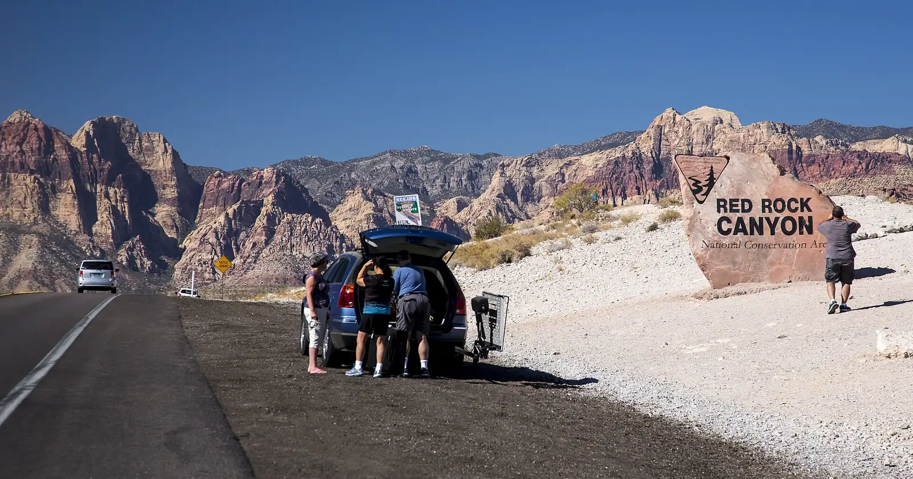

From $45 a ticket, fees not stated; varies by date. Entering AREA15 itself is free with an online reservation; each experience has its own rules.
Las Vegas, Nevada
Things to Do in Las Vegas With Teens: 8 Picks by Trip Style
Researched with AI (Miles Rowan) · sources linked and dated · How we check
Eight teen picks, from the free Bellagio fountains to Omega Mart walk-through art, with family costs where official prices exist.
Family of 4 (2 adults, 2 teens 13-17), estimate
- $20 a car at Red Rock Canyon, plus any booking fee
- ≈ $75 Neon Museum by day, plus a ticket fee
- ≈ $180+ Omega Mart (walk-through art) starting price, plus any fees
Official prices read Nov 1 and 3, 2026.
Free: the Bellagio Conservatory and fountains and Pinball Hall of Fame entry (games are pay per play). The rest cost money; the table says what to check for each pick.

Coming for the holidays? Christmas in Las Vegas with kids, free and paid
Prices and key rules checked: November 1-6, 2026, except as dated in Sources Bellagio and Big Apple Coaster last read: July 22, 2026 (not re-read November 6)
Time, area and "why go" labels are our estimates. Dollar prices and venue rules are official, dated in Sources. Check the exact ticket and rules before you buy.
Compare teen activities
Teen activity decision table
Dollar prices are official (read Nov 1 and 3, 2026). Pinball read Nov 6. Time and why-go labels are our estimates unless marked official.
| Activity | Cost | Why go | Time and area | Check first |
|---|---|---|---|---|
| AREA15 / one exact experience | Entry free with online reservation; Omega Mart from $45 a ticket; others vary | Walk-through art and games | 2-4 hrs, off Strip | Under 18: adult throughout; check exact experience |
| Red Rock Canyon Scenic Drive | $20 a car (BLM daily pass, read Nov 3, 2026); check any booking fee when you reserve | Desert scenery and a break from the Strip | Half day, west of Strip | Oct 1-May 31: reserve online for 8 a.m.-5 p.m. entry; check weather and road |
| Big Apple Coaster and Arcade | Paid; no official price read; check live | A real coaster, plus an arcade for siblings | 1-2 hrs, south Strip | Coaster riders at least 54 inches (last read July 22); check weather and hours |
| High Roller observation wheel | Paid; official page showed no price Nov 6, 2026; check live | Skyline views without a long show | 30-minute ride (official), at the LINQ | Check ticket and cabin terms |
| Pinball Hall of Fame | Free entry; 25¢ or 50¢ a play | Play as long or as little as you like | 1-2 hrs, south Strip | Its site says open 10 a.m. daily to 9 p.m., 10 p.m. Fri-Sat; Travel Nevada says 11-9 |
| Neon Museum | By day: $25 adult, $12.50 ages 7-17, plus a ticket fee | Old Vegas signs and design history | 60-90 min, Downtown | Outdoors on fine gravel; general admission closes above 105°F; rarely cancels for rain |
| Bellagio Conservatory and fountains | Free | Classic Vegas photos with no ticket | 60-90 min, center Strip | Check display and fountain schedules (last read July 22) |
| Sphere: The Wizard of Oz | Paid; no price on Sphere's pages Nov 6, 2026; check live at Ticketmaster | A huge-screen show | About 75 min (official), east of Strip | Ages 6+; every guest needs a ticket; effects can include haptics, flashing lights, fog and wind |
Teen quick picks
Pick by what your teen likes
Start with one stop. Then check the ticket, age or height rule, weather and the ride back.
Use the scenic drive or one planned stop when the teen wants desert scenery more than another resort corridor.
Coaster riders must be at least 54 inches; the arcade gives mixed-height siblings a separate option.
Free fountains, then free entry to Pinball, where games cost 25¢ or 50¢ a play.
About 75 minutes, for ages 6 and up. Prefer skyline or signs? Try High Roller or the Neon Museum instead.
Check before you buy
Check these before you buy
Age, height, weather, ticket or transport details can change the plan for these picks.
AREA15 / one exact experience
Why consider it
The district offers immersive art, games, rides, and events that can feel chosen for older kids. Best for teens who want interactive or visual novelty and will help select the exact experience.
Main tradeoff
The name AREA15 does not identify one product; each experience has separate age, effects, time, and ticket rules.
How to plan it
Pick one experience before buying. A multi-attraction pass is not automatically better. Plan food or a quiet break before another loud stop. Check its under-18 rule, effects, hours and refunds.
Pair nearby
Pair with a hotel break.
Red Rock Canyon Scenic Drive
Why consider it
The desert setting gives teens a genuine contrast to resort interiors and screens. Best for teens who value scenery, photography, geology, or a break from indoor spectacle.
Main tradeoff
Heat, weather, limited services, driving, and trail choice can turn the same destination into a very different outing.
How to plan it
Pick the drive or one stop. Do not promise a hike until you check conditions. Bring water; plan restrooms and food before you leave. Oct 1-May 31, reserve 8 a.m.-5 p.m. entry on Recreation.gov. Check road status, weather and fire rules.
Pair nearby
Pair with a low-key evening.
Big Apple Coaster and Arcade
Why consider it
A named thrill ride gives ride-focused teens a clear reason to choose the South Strip. Best for teens who actively want the coaster; the arcade provides a different option for non-riders.
Main tradeoff
Coaster riders must be at least 54 inches without footwear, operations can change with weather, and the arcade is a separate spend.
How to plan it
Check each rider's height first. Non-riders can use the arcade. Set a play budget and pick the meal first. Check hours, weather, ticket terms and height.
Pair nearby
Pair with a New York-New York meal.
Sphere: The Wizard of Oz
Why consider it
The venue can deliver the kind of large-format visual event a teen specifically asks to see. Best for teens who are genuinely interested in the current production rather than the building alone.
Main tradeoff
The production, content, effects, runtime, price, and age fit change; Sphere is a venue, not one stable attraction.
How to plan it
Pick the show together and price the full order before planning the night. Keep the meal and ride back simple around the entry time. Check age guidance, effects, entry rules, fees and refunds.
Pair nearby
Pair with one meal, not another major show.
Neon Museum
Why consider it
The collection can appeal to teens interested in design, photography, signs, or Vegas history. Best for teens who choose visual history over rides, games, or another large show.
Main tradeoff
It is an outdoor timed visit, so heat, wind, air quality, storms, and personal interest decide whether it is worth it.
How to plan it
Choose the visit time around current conditions and keep Downtown short. Plan water, food, and transport before the timed entry. Check weather rules, photo rules, hours and ticket terms.
Pair nearby
Pair with an early Downtown meal.
Sample plans
Build the trip around one stop your teen picks
One-day first visit
Slow or pool morning, then Pinball Hall of Fame. Add the free Bellagio fountains. Swap Pinball for Big Apple Coaster or Omega Mart if your teen wants more.
Two-day contrast
Day 1: Bellagio (free) and Pinball. Day 2: Red Rock ($20 a car plus any booking fee), or Omega Mart (from ≈ $180 for 4, plus any fees) if indoors suits you better.
Heat or rain
Omega Mart, Pinball or The Wizard of Oz at Sphere. Indoors can still mean lots of walking and noise.
Mixed ages
Give the teen first choice of the main stop; let younger siblings use the arcade, hotel pool, or all-ages guide rather than forcing every family member through the same ticket.
Plan the cluster
Use the teen page with the broader family guide
All-ages activity hub
Use the broader 12-choice guide when younger siblings, grandparents, or mixed stamina change the shortlist.
Family hotel comparison
Compare ten hotels by trip style, room setup, pool role, rough nightly total, and sampled online-review themes.
Stay-area guide
Choose the trip base before locking routes; exact resort exits, transport, pool access, and room location shape the teen plan.
Family itinerary
Plan the main stop around meals, weather, hotel breaks, and younger siblings without building a Strip marathon.
Before buying tickets
Three checks that change a teen plan
Exact attraction, not destination name
AREA15 and Sphere contain changing experiences or productions. Select the exact ticket first, then check age, height, effects, duration, accessibility, and refund terms.
Weather, height, and timed entry
Big Apple Coaster riders must be at least 54 inches; Red Rock and Neon Museum plans change with weather and operating conditions. Recheck near the visit.
Minor and late-night rules
AREA15 minor policy checked October 9, 2026: under-18 visitors must stay with an adult throughout the visit. Its FAQ says the district is open to all ages; individual experiences can have separate requirements. Check the selected ticket or event and current city curfew guidance before a late-night plan. City of Las Vegas curfew for under-18s without a parent, guardian or adult with legal custody (city post May 27, 2026): school year 10 p.m.-5 a.m. Sun-Thu, midnight-5 a.m. Fri-Sat; summer and school holidays midnight-5 a.m.; Fremont Street area from 9 p.m. Fri, Sat and legal holidays. That post does not mention the Strip; check its rule separately.
AREA15 age-policy FAQ AREA15 Code of Conduct City youth-curfew guide
Common planning questions
Las Vegas with teens FAQ
What are the strongest Las Vegas choices for teens?
Start with the teen's interest: AREA15 for one selected immersive experience, Red Rock for desert scenery, Big Apple Coaster for thrills, Pinball for flexible games, or Sphere, High Roller, and Neon Museum for different kinds of visual payoff.
Can teenagers explore Las Vegas on their own?
AREA15 requires under-18 visitors to stay with an adult throughout the visit (policy checked October 9, 2026). Elsewhere, check the exact venue's minor policy and current city curfew guidance; do not assume independent entry.
How should a mixed-age family use this page?
Let the teen choose one main stop, then use the all-ages guide, arcade, hotel break, or split plan for younger siblings instead of forcing every child through the same activity.
Sources checked
Official sources and licensing notes
Sphere, High Roller, Pinball, Neon Museum, AREA15 free pass and city curfew checked November 6, 2026. Red Rock read November 3. Omega Mart and Neon prices read November 1. AREA15 under-18 policy read October 9. Bellagio and Big Apple Coaster last read July 22 (older; not re-read November 6). Use the exact event or attraction page again near the visit because productions, effects, prices, hours, weather rules, and minor policies can change.
- AREA15 age-policy FAQ (October 9, 2026)
- AREA15 Code of Conduct (October 9, 2026)
- AREA15 visit information (July 22)
- AREA15 pass restrictions (July 22)
- Omega Mart tickets (price, November 1)
- Neon Museum daytime admission (price, November 1)
- AREA15 free general admission
- Red Rock Canyon NCA (July 22)
- Red Rock Canyon fees and planning
- Red Rock Canyon timed entry
- Big Apple Coaster and Arcade
- High Roller FAQ
- Pinball Hall of Fame site
- Pinball Hall of Fame on Travel Nevada
- Neon Museum visit FAQ
- Bellagio fountains
- Bellagio Conservatory
- The Wizard of Oz at Sphere
- Sphere FAQs
- City of Las Vegas youth-curfew guide
- Red Rock Canyon photo source and license
- CC BY 2.0 license
.jpg){kind=link}